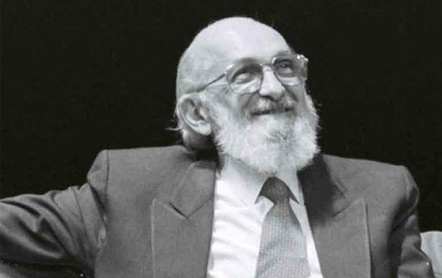

Obras
Obras
Filosofia da Educação

As contribuições de Paulo Freire para a filosofia da educação vêm não apenas das abordagens mais clássicas de Platão, mas também de pensadores marxistas e anticolonialistas modernos. De fato, de muitas maneiras, sua Pedagogia do Oprimido pode ser melhor lida como uma extensão ou resposta a Os Condenados da Terra (1963), de Frantz Fanon, que enfatizava a necessidade de fornecer às populações nativas uma educação que fosse simultaneamente nova e moderno (e não tradicional) e anticolonial (não simplesmente uma extensão da cultura do colonizador).
Freire é mais conhecido por seu ataque ao que chamou de conceito "bancário" de educação, no qual o aluno era visto como uma conta vazia a ser preenchida pelo professor, embora as críticas a essa visão não fossem novas. O conceito da criança como uma tabula rasa ou "lousa em branco" (que é basicamente o mesmo que o "conceito bancário") já havia sido rejeitado pela concepção de Rousseau da criança como um aprendiz ativo, e pensadores como John Dewey e Alfred North Whitehead criticava fortemente a transmissão de meros "fatos" como objetivo da educação.
Mais desafiadora foi a forte aversão de Freire à dicotomia professor-aluno. Essa dicotomia é admitida em Rousseau e restringida em Dewey, mas Freire chegou perto de insistir que ela deveria ser completamente abolida. Isso é difícil de imaginar em termos absolutos, pois deve haver alguma encenação da relação pais-filhos na relação professor-aluno, mas o que Freire sugeriu é que uma profunda reciprocidade seja inserida nas noções de professor e aluno. Freire queria pensar em termos de professor-aluno e aluno-professor; ou seja, um professor que aprende e um aluno que ensina, como papéis básicos da participação em sala de aula:
"[...]o ensino não pode ser um processo de transferência de conhecimento de quem ensina para o aluno. Esta é a transferência mecânica que resulta da memorização mecânica, que já critiquei. O estudo crítico correlaciona-se com um ensino igualmente crítico, que exige necessariamente um modo crítico de compreender e de realizar a leitura da palavra e do mundo, a leitura do texto e do contexto (Professores como trabalhadores da cultura: cartas aos quem se atreve a ensinar)".
Assim, a abordagem de Freire foi uma tentativa de implementar algo como a democracia como um método educacional, não apenas como um objetivo da educação. Mesmo Dewey, para quem a democracia era uma pedra de toque, não integrou totalmente as práticas democráticas em seus métodos. Freire afirmou que o verdadeiro conhecimento só pode resultar da aprendizagem baseada na experiência e defendeu a aprendizagem de serviço como o maior método de aprendizagem.
Ele acreditava que o aprendizado de serviço estimulava a consciência do aluno sobre a necessidade de uma investigação mais aprofundada. Ele via essa motivação interna como a chave para o aprendizado bem-sucedido e o diálogo como o método chave. Assim, ele enfatizou a igualdade de status de alunos e professores.
A Pedagogia do Oprimido
A Pedagogia do Oprimido é a obra de Freire mais conhecida. Publicado pela primeira vez em 1970, o livro examina a luta por justiça e equidade no sistema educacional e propõe uma nova pedagogia.
Dedicado "aos oprimidos, e àqueles que sofrem com eles e lutam ao seu lado", Freire inclui uma detalhada análise de classe marxista em sua exploração da relação entre o colonizador e o colonizado:
A liberdade é adquirida por conquista, não por doação. Deve ser perseguido de forma constante e responsável. A liberdade não é um ideal situado fora do homem; nem é uma ideia que se torna um mito. É antes a condição indispensável para a busca da perfeição humana (Pedagogia do Oprimido).
Segundo Freire, a liberdade será o resultado da "práxis" - ação informada - quando for alcançado um equilíbrio entre teoria e prática. Freire propõe a “dialógica” como instrumento para libertar o colonizado, por meio do uso da cooperação, unidade, organização e síntese cultural (superar problemas da sociedade para libertar o ser humano). Isso contrasta com os “antidialógicos” que usam a conquista, o conceito de dividir para reinar, manipulação e invasão cultural.
No que diz respeito à educação, Freire argumentou que as palavras envolvem uma interação radical entre reflexão e ação e que as palavras verdadeiras são transformacionais. O diálogo requer respeito mútuo e cooperação não apenas para desenvolver o entendimento, mas também para mudar o mundo. A educação "autêntica", segundo Freire, envolverá o diálogo entre o professor e o aluno, mediado pelo contexto mundial mais amplo.
Freire rejeitou a abordagem "bancária" da educação (uma metáfora usada por Freire que sugere que os alunos são considerados contas bancárias vazias que deveriam permanecer abertas para depósitos feitos pelo professor), alegando que resulta na desumanização tanto dos alunos quanto dos professores. Em vez disso, Freire defendeu uma abordagem mútua mais mediada pelo mundo para a educação que considera as pessoas incompletas.
Essa abordagem "autêntica" da educação deve permitir que as pessoas tenham consciência de sua incompletude e se esforcem para serem mais plenamente humanas. Essa tentativa de usar a educação como meio de moldar conscientemente a pessoa e a sociedade é chamada de "conscientização", termo cunhado pela primeira vez por Freire no livro.
A Pedagogia do Oprimido de Freire foi publicada em 17 idiomas e ainda é um livro amplamente lido no século XXI. Antes de sua publicação em 1970, era chamado de livro violento, opondo-se à democracia cristã e promovendo a anarquia e os ideais comunistas. Mais tarde, porém, foi reconhecido como um verdadeiro pioneiro da educação emancipatória, que trabalhou para libertar os silenciados e oprimidos através da educação e que ensinou responsabilidade social aos oprimidos. Seu conceito de "educação popular" foi amplamente praticado nos países do terceiro mundo, especialmente na América Latina, e é considerado uma original e importante contribuição latino-americana para o pensamento pedagógico universal.
O Instituto Paulo Freire foi criado com o objetivo de gerar diálogo entre os estudiosos e fomentar a pesquisa de novas teorias educacionais que modernizem a forma como a educação é conduzida nas escolas. O instituto está ativo em 18 países ao redor do mundo.
Principais Obras
- • Freire, Paulo. [1967] 1976. Education, the Practice of Freedom. London: Writers and Readers Publishing Cooperative.
- • Freire, Paulo. [1970] 2000. Pedagogy of the Oppressed. Continuum International Publishing Group.
- • Freire, Paulo. 1972. Cultural Action for Freedom. Harvard University Press.
- • Freire, Paulo. 1973. Education for Critical Consciousness. Seabury Press.
- • Freire, Paulo. 1978. Pedagogy in Process: The Letters to Guinea-Bissau. Continuum International.
- • Freire, Paulo. 1984. The Politics of Education: Culture, Power, and Liberation. Bergin & Garvey.
- • Freire, Paulo, and Antonio Faundez. 1989. Learning to Question: A Pedagogy of Liberation. New York: Continuum International.
- • Freire, Paulo. 1992. Pedagogy of the City. New York: Continuum International.
- • Freire, Paulo, and Ana Maria Freire. 1994. Pedagogy of Hope: Reliving Pedagogy of the Oppressed. New York: Continuum International.
- • Freire, Paulo. 1996. Letters to Cristina: Reflections on my Life and Work. New York: Routledge.
- • Freire, Paulo, and Ana Maria Freire. 1997. Pedagogy of the Heart. New York: Continuum International.
- • Freire, Paulo. 1998. Politics and Education. Los Angeles: UCLA Latin American Center Publications.
- • Freire, Paulo. 1998. Teachers as Cultural Workers: Letters to those who Dare Teach. Boulder, CO: Westview Press.
- • Freire, Paulo. 2000. Pedagogy of Freedom: Ethics, Democracy, and Civic Courage. Lanham, MD: Rowman & Littlefield Publishers.
Início ⟳